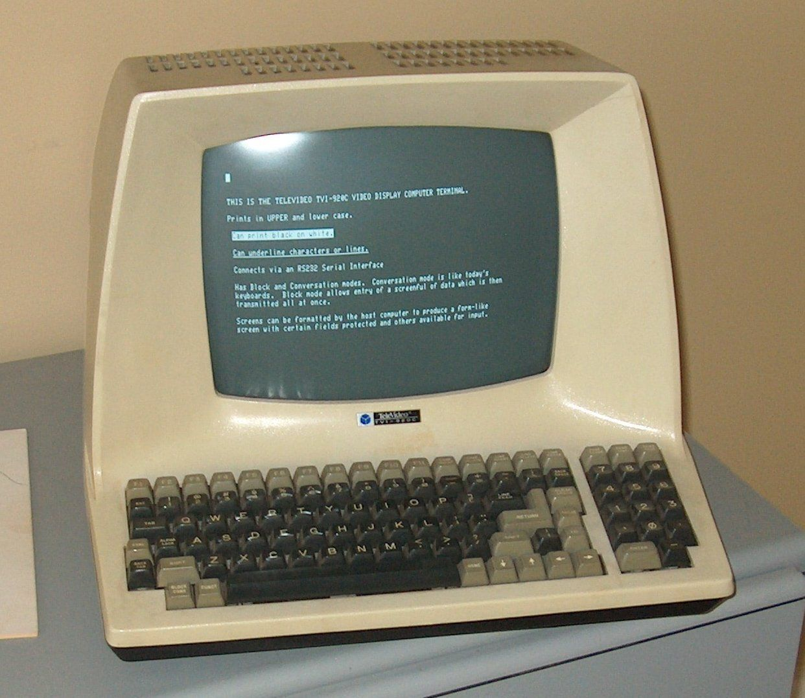

Introdução
Esse é um tutorial de linux para iniciantes criado pelos autores abaixo, e apenas portado para usar o mdbook para facilitar a visualização, nenhum texto foi editado.
Autores
-
Francisco Paradella (Happy) - Developer & Member of He4rt Developers - Twitter
-
Lucas Silva (LucasHe4rt) - Back-end Developer & Member of He4rt Developers - Twitter
-
Marco Antonio (Specko) - Back-end Developer & Member of He4rt Developers - Twitter
Distribuições Linux
Sejam bem vindos ao curso de Linux da He4rt Developers, aqui nos vamos desbravar esse mundo temido por alguns desenvolvedores e amado por muitos. Veremos tópicos que abrangem desde o mais básico da CLI até tópicos avançados como Segurança do Sistemas.
Para começar preciso explicar uma coisa, o sistemas do Pinguim é um sistema modular, que é composto por varias partes que combinam entre si. Essas partes são compostas desde Softwares que se comunicam com o Hardware diretamente até Interfaces, mas não se assuste, vamos explicar tudo aqui, vamos passar por todos os tópicos abaixo.
- Kernel
- Gerenciador de Pacotes
- Drivers
- Ferramentas GNU
- Shell
Só para lembrar, coisas como um ambiente Desktop não precisam estar presente em uma distribuição, mas agora vamos lá!
Kernel
O Kernel é a central do Sistema Operacional da maior parte dos computadores, ele é como se fosse uma ponte que faz a ligação entre os seus aplicativos e o processamento feito no nível de Hardware. As responsabilidades mais básicas do Kernel são; Gerenciamento De Processos, Gerenciamento De Memoria, Gerenciamento De Dispositivos e Chamadas Do Sistema.
Gerenciador De Pacotes
Resumidamente um gerenciador de pacotes são ferramentas que automatizam o processo de instalação, atualização e remoção de aplicativos de um Sistema Operacional. Suas principais funções são; Verificar checksums, Verificar a assinatura digital e Gerir as dependências para ter certeza de que um pacote vai ter todas as suas dependências necessárias já que instalar um aplicativo funciona de maneira recursiva. Alguns famosos que podemos citar são o Apt, o pacman e o DNF.
Drivers
A função de um Driver é diminuir a abstração no contexto de Hardware e Software para que o Software não tenha problema ao interagir com o Hardware. Um Driver não é um processo gerado pelo Sistema Operacional, mas sim uma tabela com informações sobre cada periférico. Em resumo, eles são pequenos programas que fazem a comunicação entre o Sistema Operacional e o seu Hardware.
Ferramentas GNU
As ferramentas GNU fazem parte de um conjunto feito pelo Projeto GNU, esse conjunto forma um sistema que é usado para desenvolver aplicações e sistemas operacionais. Essas ferramentas são:
-
GCC, um conjunto de compiladores de linguagens como; Java, C, Fortran e Pascal.
-
GNU make, um utilitário que compila automaticamente programas e bibliotecas.
-
GNU Binutils, um conjunto de ferramentas de programação para criar e gerenciar programas binários, arquivos de objetos, bibliotecas, dados de perfil e código-fonte de montagem.
-
GNU Debugger, mais conhecido por GDB, é um depurador de GNU.
-
GNU Autoconf, é uma ferramenta para a produção de scripts shell.
-
GNU CoreUtils, ferramentas básicas do SO como cat, rm e ls
Shell
O Shell Do Unix é um interpretador de linha de comando(melhor explicado na proxima parte). O usuário indica a operação do computador pela entrada de comandos para o Shell executar ou então cria scripts de texto ou coisa parecida. Agora no começo não precisa se preocupar muito com isso, mas se você quer dar ao seu terminal uma cara mais bonita vou deixar algumas recomendações abaixo.
- ZSH - Oh My Zsh
- Fish - Oh My Fish
Consciência das principais aplicações e seus usos.
Agora nos vamos conhecer algumas das aplicações OpenSource mais famosas que transformam o nosso querido Pinguim em um sistema Desktop completo!!.
O nosso foco vai ser em aplicações OpenSource, mas várias dessas aplicações também vão estar presentes em outras sistemas operacionais. Antes de começarmos em gostaria de explicar um conceito muito importante, que são os Ambientes Gráficos.
Ambientes Gráficos
Uma das coisas que vai diferenciar bastante o Linux de outros sistemas operacionais é a possibilidade de você poder personalizar o seu sistema da maneria que você gosta, com opções de varios ambientes gráficos e costumizações. Em um grande resumo, o ambiente gráfico é a "cara" do seu Sistema, vou deixar uns exemplos abaixo.
UBUNTU
Abaixo por exemplo, nos temos o Ubuntu que usa o GNOME.

KUBUNTU
~~O Bill Gates gosta desse
Já o Kubuntu usa o KDE.

E aqui nos temos um ponto para você escolher o Pinguim como seu ambiente desktop, ele é altamente customizado, você consegue fazer tudo da sua maneira, e também ele já vem com varios aplicativos prontos para você usar, os quais vamos citar agora.
Escritório
Os pacotes de escritório são provavelmente o que um usuario comum vai buscar de um Desktop Linux, mas uma das coisas que mais afastas as pessoas do mundo Linux é o fato de não terem certos aplicativos de maneira nativa para ele, aqui nos poderiamos citar o famoso Microsoft Office, mas o pinguim não fica para tras e também apresentar otimas soluções para quem procura um pacote de aplicativos para escritório, as alternativas mais famosas são:
Design e multimídia
O famoso Pacote Adobe não esta presente no Linux, mas também temos excelentes alternativas para ele, que vão ser listadas abaixo.
Gimp
Pode se dizer que ele é o "PhotoShop" do Linux, é excelente para edições de imagens e se você já estiver acostumado com o editor da adobe, o Gimp possui alguns plugins para deixar a interface bastante parecida com o PhotoShop.
Inkscape
O Inkscape é a alternativa para o Adobe Illustrator, totalmente OpenSource. Uma otima alternativa para você que quer mostrar seu lado artistico para o mundo.
Audacity
Diferente dos outros dois que são alternativas para o excelente trabalho da Adobe, esse editor de áudio é simplesmente o melhor, muito recomendado para você que quer editar seu PodCast ou até mesmo um canal no YouTube.
Blender
Desse aqui você provavelmente já ouviu falar, um dos programas mais conhecidos quando o assunto é modelagem, animação, texturização, composição ou renderização de vídeos.
Internet
Aqui nos começamos a voltar mais para o mundo do desenvolvimento, o Linux é muito usado como um servidor Web, e é claro que nesse caso não poderiamos deixar de falar sobre:
Apache
O Apache ou HTTP Daemon Apache, é um servidor web open source criado em 1995.
PostgreSQL
Existem varios bancos de dados para o Linux, um dos mais famosos e o meu xodó é o Postgre.
Conclusão
Eu sei que tanta teoria assim pode parecer bem chato no inicio, mas o mundo Linux é muito grande, e logo vamos começar a ter conteudos mais tecnicos aqui. Nos vemos na proxima parte aonde vamos falar sobre as licenças OpenSource.
Licenças Open-Source
No mundo atual, a propriedade de cada cidadão é um tema bem debatido pelas autoridades e pela comunidade. Em Engenharia De Software também não é diferente, o código open-source atualmente é praticamente a maior fonte de código fonte que temos no mundo, debates surgiram para saber como regularizar essa fonte de informação, e o que fazer em cada caso.
Um exemplo atualmente seria o Chromium, Chromium é um projeto de navegador open-source, no qual o Google Chrome baseia o seu código fonte, mas, vários outros navegadores que possuem certa rivalidade com o Google Chrome também podem utilizar esse motor, ou base para seus projetos (Brave Browser, por exemplo), então vem o grande debate sobre se eu poderia simplesmente copiar o código de algum aplicativo open-source e vender como se fosse meu. Mas é aqui que entra o papel das licenças Open-Source. As principais seriam: Licença MIT, Apache, GPL(V2 ou V3) e BSD. Todas essas seguem os mesmos princípios.
1- Software pode ser modificado, usado comercialmente e distribuído.
2- Software pode ser modificado, e usado de forma privada.
3- A licença e os direitos precisam ser incluídos no Software.
4- Os autores dos Software não provêm garantias.
Todas elas também possuem um aspecto importante em comum: A Open Source Initiative (OSI) aprovaram elas. A OSI foi fundada em 1998 com o intuito de definir o que significa código livre.
GNU General Public License(GPL)
Esta licença deixa o seu código aberto, mas ao mesmo tempo quer ter uma segurança a mais. Das mais famosas é a licença mais restritiva.
-
O código-fonte deve ser público sempre que uma distribuição do software é feito. Ou seja, se você lançar um produto que é uma modificação de um projeto deste tipo, você precisa tornar o seu código público também.
-
Modificação do Software deve ser lançada sob a mesma licença.
-
Mudanças no código devem ser obrigatoriamente documentadas.
-
Se o material patenteado for usado na criação de software, ele concede aos usuários o direito de usá-lo. Se o usuário processar qualquer pessoa com o uso do material patenteado, eles perderão o direito de usar o software.
Linux, Git e WordPress usam GPL.
Apache
Esta é a licença que o React utilizava até um pouco tempo, ela possui duas versões principais: 2-clause e 3-clause.
-
O código-fonte não precisa ser necessariamente público quando a distribuição do Software é feita.
-
Modificações podem ser lançadas sob qualquer licença
-
Mudanças feitas no código-fonte não precisam ser documentadas.
-
Não tem nenhuma posição em relação ao uso de patentes
-
A licença e o direito de uso precisam ser incluídos na documentação da versão compilada do código-fonte
-
O BSD-3-clause afirma que os nomes dos autores e colaboradores não podem ser usados para promover produtos derivados do Software sem permissão explícita.
GO, Pure.css e o Sentry usam a licença BSD.
MIT LICENSE
Por fim, a licença MIT. Dentre todas as que listamos, ela é a mais permissiva de todas, além de ser a mais famosa. Comparado às demais, ela oferece pouquíssima proteção aos autores do software. Vamos dar uma olhada nas principais cláusulas.
-
O código-fonte não precisa ser necessariamente público quando a distribuição do software é feita.
-
Modificação podem ser lançadas sob qualquer licença
-
Mudanças feitas no código-fonte não precisam ser documentadas.
-
Não tem nenhuma posição em relação ao uso de patentes.
jQuerry, Bootstrap e Rails usam a licença MIT.

Referências
https://medium.freecodecamp.org/how-open-source-licenses-work-and-how-to-add-them-to-your-projects-34310c3cf94
https://medium.com/code-prestige/como-funcionam-as-licen%C3%A7as-open-source-9ff1da677ccd
Tecnologias Da Informação e Comunicação(Tic)
Diferente do que muitas pessoas pensam, até esse ponto você já deve saber que o Linux apesar de ser muito bom para servidores não é usado apenas para isso, já que também pode ser um desktop muito poderoso e com diversas opções de uso. Agora vamos falar um pouco mais sobre as famosas Switchs de programas, começando pelo querido Gnome.
Gnome
O gnome foi um dos primeiros gerenciadores de janela que apareceu no mercado, usando o famoso framework GTK, o uso de memória do Gnome é alto, mas se você tem pelo menos 4gb de ram vai poder usar ele sem nenhuma preocupação. Podemos dizer que as distros mais famosas que usam ele são:
- Fedora
- Debian
- Ubuntu
- Suse
- CentOS
- SteamOS
O uso de gerenciadores de janelas podem variar de ano para ano, já que as distruibuições estão sempre evoluindo, um exemplo disso seria o Ubuntu que até pouco tempo usava o Unity, e algumas também permitem que você escolha qual quer usar na hora da instalação.
KDE
O KDE também é bem antigo, ele usa o framework QT que é um pouco mais pesado que o Gnome(nada que 4GB de ram não resolvam também), hoje em dia eles usam o Plasma, que é uma area de trabalho muito responsiva, e que consegue se adequar a qualquer tipo de tamanho de tela. As principais distribuições que usam o KDE são:
- OpenSuse
- Gentoo
- Fedora
- Kubuntu
- ArchLinux
XFCE
Agora nos temos o XFCE, que é um dos mais leves e rapidos, geralmente usado em distruibições que tem foco em computadores mais leves, mas o topico mais legal sobre ele é que ele incorpora a filosofia do UNIX tradicional de modularidade e reutilização. As principais distribuiões que usam o XFCE são:
- Mint
- Debian
- ArchLinux
- Manjaro
É bom lembrar que não existem apenas GNOME, KDE e XFCE, esses são os mais famosos, abaixo vou deixar alguns prints de distribuições para você poder escolher a que mais te agrada.
OpenSuse com KDE

Ubuntu

Linux mint com XFCE

02 - Básico
Conteúdo do artigo
Terminal
Console
Emulador de Terminal
Shell
Linha de comandos - CLI
Referências
Autores
Antes de entendermos o que é uma linha de comandos é importante nós entendermos os conceitos:
Terminal
O terminal é um ambiente para entrada e saída de comandos, a palavra terminal também pode significar um dispositivo no qual podemos interagir com o computador, como por exemplo um teclado e monitor. No caso do terminal que estamos habituados ele é um software que emula os terminais tradicionais.
Exemplo de um terminal tradicional:
Console
O console é um tipo especial de terminal. Geralmente é um painel de controle conectado a um computador. Originalmente um console é um dispositivo eletrônico no qual nos permite controlar um computador, por meio de entrada de texto e saída de vídeo.
Exemplo de um console tradicional:
No linux, nós também temos o console porém geralmente acessamos o console quando temos uma distribuição no modo texto, ou seja, sem interface gráfica.
Emulador de terminal
Os terminais em software, também podem ser chamados de pseudo-terminais ou terminais virtuais, são softwares fornecidos por programas, específicos, que são do tipo emulador de terminais, alguns exemplos deles são:
- Xterm
- Konsole
- Gnome Terminal
- Terminator
- Termux
- Sakura
Shell
O shell é um interpretador de linha de comandos. É a interface primária que nós vemos, caso o sistema não possuir interface gráfica, ao fazermos login, e sua função básica é iniciar outros programas e executar comandos. Quando estamos falando de linux, o shell se refere a shell de linha de comandos, alguns exemplos de shells comuns no linux:
- Bash
- csh
- zsh
- fish
Linha de comandos - CLI
Uma linha de comandos, ou CLI que é um acrônimo para command line interface, é uma interface na qual nós podemos digitar comandos e pressionarmos alguma tecla para que o comando seja, de fato, executado. Ou seja, na linha de comando nós não temos botões, menus, mouse, atalhos entre outros itens que possam ser clicados com o mouse.
Exemplo de uma linha de comando:
lucashe4rt@He4rt-PC:~$
Quando pressionamos a tecla que faça o nosso comando ser executado, geralmente a tecla enter, o shell captura esse comando, interpreta e executa adequadamente.
Agora que vimos o que é uma linha de comando e o que é um shell, vamos entender quais são suas diferenças, já que os dois são bem semelhantes.
Shell vs Linha de comandos
A linha de comandos não passa de uma interface, na qual, nós escrevemos os comandos. Já o shell é um programa especial que consegue interpretar esse comandos que estamos digitando.
Próximo
Referências
Bóson Treinamentos - O que são Terminal, Console, Shell e CLI - Video
Autores
- Lucas Silva (LucasHe4rt) - Back-end Developer & Member of He4rt Developers - Twitter
02 - Comandos básicos
Contéudo do artigo
cd
ls
df
cat
ps
kill
Referências
Autores
cd
O comando cd é um acrônimo para "change directory" e serve para navegar do diretório atual para outro especificado em seguida.
Sintaxe:
cd [diretório]
Exemplo:
lucashe4rt@He4rt:~$ cd /
- O caractere
/identifica o diretório raiz do nosso sistema de arquivos.
Resultado:
lucashe4rt@He4rt:/$
ls
Com o comando ls podemos visualizar o conteúdo de um diretório e também informações sobre arquivos, informando dados como nomes de arquivos, permissões, proprietários e datas de criação, além de inúmeras opções para exibir as informações de diversas formas.
Sintaxe:
ls [opções]
Algumas opções do ls:
-a- Mostra todos os arquivos, incluindo os ocultos. Exemplo:
lucashe4rt@He4rt:~$ ls -a
. .bashrc .java .themes Downloads
.. .cache .local .viminfo Games
.ICEauthority .config .mozilla .vscode Games-Wine
.PhpStorm2019.3 .eclipse .mysql_history .wget-hsts Images
.Xauthority .gitconfig .node_repl_history .wine32 aur
.backgrounds .gitkraken .npm .yarn go
.bash_history .gnome .pki .yarnrc
.bash_logout .gnupg .pulse-cookie Desktop
.bash_profile .icons .swt Documents
-A- Semelhante ao-a, mas não mostra o diretório corrente (.) ou o diretório acima (..). Exemplo:
lucashe4rt@He4rt:~$ ls -A
.ICEauthority .config .mozilla .vscode Games-Wine
.PhpStorm2019.3 .eclipse .mysql_history .wget-hsts Images
.Xauthority .gitconfig .node_repl_history .wine32 aur
.backgrounds .gitkraken .npm .yarn go
.bash_history .gnome .pki .yarnrc
.bash_logout .gnupg .pulse-cookie Desktop
.bash_profile .icons .swt Documents
.bashrc .java .themes Downloads
.cache .local .viminfo Games
-i- Mostra o número do inode de cada arquivo na primeira coluna. Exemplo:
1195906 Desktop 660779 Games 396790 aur
1319602 Documents 2630465 Games-Wine 2890994 go
1200375 Downloads 1314860 Images
-l- Formato longo, mostra permissões, número de links, propietário, grupo, tamanho, data de modificação e nome do arquivo. Exemplo:
lucashe4rt@He4rt:~$ ls -l
total 1032
drwxrwxr-x 2 lucashe4rt lucashe4rt 4096 Feb 23 11:57 Desktop
drwxr-xr-x 13 lucashe4rt lucashe4rt 4096 Feb 29 23:38 Documents
drwx------ 2 lucashe4rt lucashe4rt 4096 Feb 27 15:26 Downloads
drwxr-xr-x 2 lucashe4rt lucashe4rt 4096 Feb 29 22:27 Games
drwxr-xr-x 3 lucashe4rt lucashe4rt 4096 Feb 29 22:20 Games-Wine
drwxr-xr-x 3 lucashe4rt lucashe4rt 4096 Feb 27 22:38 Images
drwxr-xr-x 3 lucashe4rt lucashe4rt 4096 Feb 23 11:20 aur
drwxr-xr-x 3 lucashe4rt lucashe4rt 4096 Feb 29 16:37 go
-m- Arquivos listados em sequência, separados por vírgula. Exemplo:
lucashe4rt@He4rt:~$ ls -m
Desktop, Documents, Downloads, Games, Games-Wine, Images, aur, go
-n- Semelhante ao-l, porém mostra UID E GID Em vez de nomes de proprietário e grupo. Exemplo:
[23:42:15] lucashe4rt@He4rt:~$ ls -n
total 36
drwxrwxr-x 2 1000 1000 4096 Feb 23 11:57 Desktop
drwxr-xr-x 13 1000 1000 4096 Feb 29 23:38 Documents
drwx------ 2 1000 1000 4096 Feb 27 15:26 Downloads
drwxr-xr-x 2 1000 1000 4096 Feb 29 22:27 Games
drwxr-xr-x 3 1000 1000 4096 Feb 29 22:20 Games-Wine
drwxr-xr-x 3 1000 1000 4096 Feb 27 22:38 Images
drwxr-xr-x 3 1000 1000 4096 Feb 23 11:20 aur
drwxr-xr-x 3 1000 1000 4096 Feb 29 16:37 go
-o- Semelhante ao-l, porém não mostra o grupo do arquivo. Exemplo:
total 36
drwxrwxr-x 2 lucashe4rt 4096 Feb 23 11:57 Desktop
drwxr-xr-x 13 lucashe4rt 4096 Feb 29 23:38 Documents
drwx------ 2 lucashe4rt 4096 Feb 27 15:26 Downloads
drwxr-xr-x 2 lucashe4rt 4096 Feb 29 22:27 Games
drwxr-xr-x 3 lucashe4rt 4096 Feb 29 22:20 Games-Wine
drwxr-xr-x 3 lucashe4rt 4096 Feb 27 22:38 Images
drwxr-xr-x 3 lucashe4rt 4096 Feb 23 11:20 aur
drwxr-xr-x 3 lucashe4rt 4096 Feb 29 16:37 go
-p- Mostra uma barra(/) na frente de nomes de diretórios. Exemplo:
lucashe4rt@He4rt:~$ ls -p
Desktop/ Documents/ Downloads/ Games/ Games-Wine/ Images/ aur/ go/
-r- Ordem reversa. Exemplo:
lucashe4rt@He4rt:~$ ls -r
go aur Images Games-Wine Games Downloads Documents Desktop
Nós também podemos juntar os comandos, por exemplo ls -la.
df
O comando df mostra o espaço livre/ocupado de cada partição. Pode ser utilizado junto com várias opções, se for utilizado sozinho, mostrará o espaço usado e disponível de todos os sistemas de arquivos atualmente montados.
Sintaxe:
df [opções]
Exemplo:
lucashe4rt@He4rt:~$ df
Filesystem 1K-blocks Used Available Use% Mounted on
dev 4028428 0 4028428 0% /dev
run 4036824 892 4035932 1% /run
/dev/sda1 114041020 10761904 97443136 10% /
tmpfs 4036824 56924 3979900 2% /dev/shm
tmpfs 4036824 0 4036824 0% /sys/fs/cgroup
tmpfs 4036824 4 4036820 1% /tmp
tmpfs 807364 12 807352 1% /run/user/1001
Algumas opções do df:
-a- Inclui sistema de arquivos com 0 (zero) blocos. Exemplo:
lucashe4rt@He4rt:~$ df -a
Filesystem 1K-blocks Used Available Use% Mounted on
proc 0 0 0 - /proc
sys 0 0 0 - /sys
dev 4028428 0 4028428 0% /dev
run 4036824 892 4035932 1% /run
/dev/sda1 114041020 10761900 97443140 10% /
securityfs 0 0 0 - /sys/kernel/security
tmpfs 4036824 47708 3989116 2% /dev/shm
devpts 0 0 0 - /dev/pts
tmpfs 4036824 0 4036824 0% /sys/fs/cgroup
cgroup2 0 0 0 - /sys/fs/cgroup/unified
cgroup 0 0 0 - /sys/fs/cgroup/systemd
pstore 0 0 0 - /sys/fs/pstore
none 0 0 0 - /sys/fs/bpf
cgroup 0 0 0 - /sys/fs/cgroup/devices
cgroup 0 0 0 - /sys/fs/cgroup/hugetlb
cgroup 0 0 0 - /sys/fs/cgroup/pids
cgroup 0 0 0 - /sys/fs/cgroup/rdma
cgroup 0 0 0 - /sys/fs/cgroup/cpuset
cgroup 0 0 0 - /sys/fs/cgroup/perf_event
cgroup 0 0 0 - /sys/fs/cgroup/net_cls,net_prio
cgroup 0 0 0 - /sys/fs/cgroup/freezer
cgroup 0 0 0 - /sys/fs/cgroup/cpu,cpuacct
cgroup 0 0 0 - /sys/fs/cgroup/blkio
cgroup 0 0 0 - /sys/fs/cgroup/memory
systemd-1 0 0 0 - /proc/sys/fs/binfmt_misc
mqueue 0 0 0 - /dev/mqueue
hugetlbfs 0 0 0 - /dev/hugepages
debugfs 0 0 0 - /sys/kernel/debug
configfs 0 0 0 - /sys/kernel/config
tmpfs 4036824 4 4036820 1% /tmp
tmpfs 807364 12 807352 1% /run/user/1001
-h- Mostra o espaço livre/ocupado em MB, KB, GB em vez de bloco. Exemplo:
lucashe4rt@He4rt:~$ df -h
Filesystem Size Used Avail Use% Mounted on
dev 3.9G 0 3.9G 0% /dev
run 3.9G 892K 3.9G 1% /run
/dev/sda1 109G 11G 93G 10% /
tmpfs 3.9G 47M 3.9G 2% /dev/shm
tmpfs 3.9G 0 3.9G 0% /sys/fs/cgroup
tmpfs 3.9G 4.0K 3.9G 1% /tmp
tmpfs 789M 12K 789M 1% /run/user/1001
-k- Lista em Kbyts. Exemplo:
lucashe4rt@He4rt:~$ df -k
Filesystem 1K-blocks Used Available Use% Mounted on
dev 4028428 0 4028428 0% /dev
run 4036824 892 4035932 1% /run
/dev/sda1 114041020 10762012 97443028 10% /
tmpfs 4036824 47692 3989132 2% /dev/shm
tmpfs 4036824 0 4036824 0% /sys/fs/cgroup
tmpfs 4036824 100 4036724 1% /tmp
tmpfs 807364 12 807352 1% /run/user/1001
-l- Somente lista sistema de arquivos locais. Exemplo:
lucashe4rt@He4rt:~$ df -l
Filesystem 1K-blocks Used Available Use% Mounted on
dev 4028428 0 4028428 0% /dev
run 4036824 892 4035932 1% /run
/dev/sda1 114041020 10761976 97443064 10% /
tmpfs 4036824 47676 3989148 2% /dev/shm
tmpfs 4036824 0 4036824 0% /sys/fs/cgroup
tmpfs 4036824 148 4036676 1% /tmp
tmpfs 807364 12 807352 1% /run/user/1001
-m- Lista em Mbytes. Exemplo:
lucashe4rt@He4rt:~$ df -m
Filesystem 1M-blocks Used Available Use% Mounted on
dev 3935 0 3935 0% /dev
run 3943 1 3942 1% /run
/dev/sda1 111369 10510 95160 10% /
tmpfs 3943 47 3896 2% /dev/shm
tmpfs 3943 0 3943 0% /sys/fs/cgroup
tmpfs 3943 1 3943 1% /tmp
tmpfs 789 1 789 1% /run/user/1001
-T- Lista o tipo de sistema de arquivos de cada partição. Exemplo:
lucashe4rt@He4rt:~$ df -T
Filesystem Type 1K-blocks Used Available Use% Mounted on
dev devtmpfs 4028428 0 4028428 0% /dev
run tmpfs 4036824 892 4035932 1% /run
/dev/sda1 ext4 114041020 10761984 97443056 10% /
tmpfs tmpfs 4036824 47708 3989116 2% /dev/shm
tmpfs tmpfs 4036824 0 4036824 0% /sys/fs/cgroup
tmpfs tmpfs 4036824 116 4036708 1% /tmp
tmpfs tmpfs 807364 12 807352 1% /run/user/1001
cat
O comando cat, derivação da palavra concatenate, permite que a gente crie, una e exiba arquivos no formato padrão de tela ou em outro arquivo, entre outras funcionalidades.
Sintaxe:
cat [opção] [arquivo]
Exemplo:
lucashe4rt@He4rt-PC:~$ cat arquivo.txt
da estrela ai se vc ta curtindo
manda pros amigo tb
vc é d+++
Algumas opções do comando cat:
-E- Marca o término de linha mostrando o caractere $ ao final de cada uma delas. Exemplo:
lucashe4rt@He4rt-PC:~$ cat -E arquivo.txt
da estrela ai se vc ta curtindo$
manda pros amigo tb$
vc é d+++$
-n- Mostra a quantidade de linas do arquivo. Exemplo:
lucashe4rt@He4rt-PC:~$ cat -n arquivo.txt
1 da estrela ai se vc ta curtindo
2 manda pros amigo tb
3 vc é d+++
-v- Exibe caracteres não exibíveis. Exemplo:
lucashe4rt@He4rt-PC:~$ cat -v arquivo.txt
da estrela ai se vc ta curtindo
manda pros amigo tb
vc M-CM-) d+++
-T- Exibe tabulação mostradas como ^I. Exemplo:
lucashe4rt@He4rt-PC:~$ cat -T arquivo.txt
da estrela ai se vc ta curtindo
manda pros amigo tb
vc é d+++
^ISegue o melhor grupo de desenvolvimento lá
^Ino
^I
^Itwitter: @He4rtDevs
-s- Remove linhas repetidas em branco. Exemplo:
lucashe4rt@He4rt-PC:~$ cat -s arquivo.txt
da estrela ai se vc ta curtindo
manda pros amigo tb
vc é d+++
Segue o melhor grupo de desenvolvimento lá
no
twitter: @He4rtDevs
Obs: essa opção mantém uma linha vazia e remove as linhas repetidas em branco.
-b- Numera as linhas que possuem algum conteúdo. Exemplo:
lucashe4rt@He4rt-PC:~$ cat -b arquivo.txt
1 da estrela ai se vc ta curtindo
2 manda pros amigo tb
3 vc é d+++
4 Segue o melhor grupo de desenvolvimento lá
5 no
6
7 twitter: @He4rtDevs
Obs: essa opção sobrescreve a opção -n.
tac- Exibe o conteúdo do arquivo em ordem contrária, da primeira à ultima linha. Exemplo:
twitter: @He4rtDevs
no
Segue o melhor grupo de desenvolvimento lá
vc é d+++
manda pros amigo tb
da estrela ai se vc ta curtindo
ps
O comando ps exibe informações sobre os processos que estão executando na máquina.
Sintaxe:
ps [opções]
Exemplo:
lucashe4rt@He4rt-PC:~$ ps
PID TTY TIME CMD
14461 pts/0 00:00:00 bash
14466 pts/0 00:00:00 ps
Algumas opções do comando ps:
-a- Mostra os processos de todos os usuários. Exemplo:
lucashe4rt@He4rt-PC:~$ ps -a
PID TTY TIME CMD
14631 pts/0 00:00:00 ps
-Aou-e- Mostra todos os processos. Exemplo:
lucashe4rt@He4rt-PC:~$ ps -e
PID TTY TIME CMD
1 ? 00:00:01 systemd
2 ? 00:00:00 kthreadd
3 ? 00:00:00 rcu_gp
4 ? 00:00:00 rcu_par_gp
6 ? 00:00:00 kworker/0:0H-kblockd
8 ? 00:00:00 mm_percpu_wq
9 ? 00:00:03 ksoftirqd/0
10 ? 00:00:00 rcuc/0
11 ? 00:00:14 rcu_preempt
12 ? 00:00:00 rcub/0
13 ? 00:00:00 migration/0
14 ? 00:00:00 idle_inject/0
16 ? 00:00:00 cpuhp/0
17 ? 00:00:00 cpuhp/1
18 ? 00:00:00 idle_inject/1
19 ? 00:00:00 migration/1
20 ? 00:00:00 rcuc/1
21 ? 00:00:03 ksoftirqd/1
23 ? 00:00:00 kworker/1:0H-kblockd
24 ? 00:00:00 cpuhp/2
25 ? 00:00:00 idle_inject/2
26 ? 00:00:00 migration/2
27 ? 00:00:00 rcuc/2
14461 pts/0 00:00:00 bash
14721 pts/0 00:00:00 ps
obs: eu removi alguns processos para o exemplo não tomar um espaço muito grande na tela.
-f- Mostra a árvore de execução de comandos. Exemplo:
lucashe4rt@He4rt-PC:~$ ps -f
UID PID PPID C STIME TTY TIME CMD
lucashe+ 14461 14455 0 11:10 pts/0 00:00:00 bash
lucashe+ 14959 14461 0 11:17 pts/0 00:00:00 ps -f
-g [grupo]- Mostra os processos de um determinado grupo. Exemplo:
lucashe4rt@He4rt-PC:~$ ps -g lucashe4rt
PID TTY TIME CMD
607 ? 00:00:00 systemd
608 ? 00:00:00 (sd-pam)
614 ? 00:00:03 xfce4-session
619 ? 00:00:19 dbus-daemon
645 ? 00:00:00 gvfsd
650 ? 00:00:00 gvfsd-fuse
662 ? 00:00:00 at-spi-bus-laun
668 ? 00:00:00 dbus-daemon
670 ? 00:00:00 xfconfd
676 ? 00:00:01 at-spi2-registr
695 ? 00:00:00 ssh-agent
698 ? 00:00:01 gpg-agent
721 ? 00:21:34 pulseaudio
722 ? 00:00:01 xfsettingsd
743 ? 00:00:23 xfce4-panel
752 ? 00:00:00 Thunar
757 ? 00:00:03 xfdesktop
768 ? 00:00:04 xfce4-power-man
769 ? 00:10:09 pulseeffects
772 ? 00:00:00 polkit-gnome-au
774 ? 00:00:00 nm-applet
781 ? 00:00:03 xfce4-screensav
788 ? 00:00:00 gvfs-udisks2-vo
796 ? 00:00:01 xfce4-notifyd
816 ? 00:00:00 gsettings-helpe
834 ? 00:00:00 dconf-service
837 ? 00:00:01 panel-6-systray
838 ? 00:00:49 panel-8-pulseau
839 ? 00:00:00 panel-4-actions
840 ? 00:00:01 panel-7-whisker
5835 ? 00:02:15 xfwm4
14455 ? 00:00:03 xfce4-terminal
14461 pts/0 00:00:00 bash
15181 pts/0 00:00:00 ps
-x- Mostra os processos que não foram iniciados no console. Exemplo:
lucashe4rt@He4rt-PC:~$ ps -x
PID TTY STAT TIME COMMAND
607 ? Ss 0:00 /usr/lib/systemd/systemd --user
608 ? S 0:00 (sd-pam)
614 ? Sl 0:04 xfce4-session
619 ? Ss 0:19 /usr/bin/dbus-daemon --session --address=systemd: -
645 ? Ssl 0:00 /usr/lib/gvfsd
650 ? Sl 0:00 /usr/lib/gvfsd-fuse /run/user/1000/gvfs -f
662 ? Ssl 0:00 /usr/lib/at-spi-bus-launcher
668 ? S 0:00 /usr/bin/dbus-daemon --config-file=/usr/share/defau
670 ? Sl 0:00 /usr/lib/xfce4/xfconf/xfconfd
676 ? Sl 0:01 /usr/lib/at-spi2-registryd --use-gnome-session
695 ? Ss 0:00 /usr/bin/ssh-agent -s
698 ? SLs 0:01 /usr/bin/gpg-agent --supervised
721 ? S<sl 21:42 /usr/bin/pulseaudio --daemonize=no
722 ? Ssl 0:01 xfsettingsd --display :0.0 --sm-client-id 29a399bd9
743 ? Sl 0:24 xfce4-panel --display :0.0 --sm-client-id 26ec8bf39
752 ? Sl 0:00 Thunar --sm-client-id 21fca4347-2f3d-49a9-87bf-6fa9
757 ? Sl 0:03 xfdesktop --display :0.0 --sm-client-id 241e9ced4-5
768 ? Ssl 0:04 xfce4-power-manager --restart --sm-client-id 2b0551
769 ? Sl 10:15 pulseeffects --gapplication-service
772 ? Sl 0:00 /usr/lib/polkit-gnome/polkit-gnome-authentication-a
774 ? Sl 0:00 nm-applet
781 ? Sl 0:03 xfce4-screensaver
788 ? Ssl 0:00 /usr/lib/gvfs-udisks2-volume-monitor
796 ? Ssl 0:01 /usr/lib/xfce4/notifyd/xfce4-notifyd
816 ? Sl 0:00 /usr/lib/pulse/gsettings-helper
834 ? Sl 0:00 /usr/lib/dconf-service
837 ? Sl 0:01 /usr/lib/xfce4/panel/wrapper-2.0 /usr/lib/xfce4/pan
838 ? Sl 0:49 /usr/lib/xfce4/panel/wrapper-2.0 /usr/lib/xfce4/pan
839 ? Sl 0:00 /usr/lib/xfce4/panel/wrapper-2.0 /usr/lib/xfce4/pan
840 ? Sl 0:01 /usr/lib/xfce4/panel/wrapper-2.0 /usr/lib/xfce4/pan
5835 ? Sl 2:20 xfwm4 --display :0.0 --sm-client-id 2bc0df4e4-72f5-
6580 ? Sl 1:02 /usr/lib/firefox/firefox -contentproc -childID 15 -
14455 ? Sl 0:03 xfce4-terminal
14461 pts/0 Ss 0:00 bash
15533 pts/0 R+ 0:00 ps -x
-u- Fornece o nome do usuário e a hora de início do processo. Exemplo:
lucashe4rt@He4rt-PC:~$ ps -u
USER PID %CPU %MEM VSZ RSS TTY STAT START TIME COMMAND
lucashe+ 14461 0.0 0.0 4376 3804 pts/0 Ss 11:10 0:00 bash
lucashe+ 15676 0.0 0.0 5664 2848 pts/0 R+ 11:32 0:00 ps -u
Obs: podemos combinar as opções como ps -aux que exibe todos os processos do sistema independente de terminal.
Filtrando processos
Se estiver difícil de encontrar um processo, você pode utilizar o ps junto com o grep, utilizando o operador pipe (|), onde você irá pegar a saida do comando ps e filtrar com o grep
Como por exemplo quereremos encontar o processo do firefox, então usariamos:
lucashe4rt@He4rt-PC:~$ ps aux| grep firefox
PID TTY TIME CMD
6 ? 00:00:00 /usr/lib/firefox/firefox
kill
O comando kill serve para matarmos processos, ou seja, finalizar tarefas dentro do nosso sistema operacional.
Sintaxe:
kill [opções] pid
Exemplo:
lucashe4rt@He4rt-PC:~$ kill 962
lucashe4rt@He4rt-PC:~$
Acabei de finalizar o processo do discord no meu computador.
Algumas vertentes do comando kill:
pkill- Especificamos o nome do processo ou um padrão para encontrar o processo. Exemplo:
lucashe4rt@He4rt-PC:~$ pkill firefox
lucashe4rt@He4rt-PC:~$
ou
lucashe4rt@He4rt-PC:~$ pkill fire
lucashe4rt@He4rt-PC:~$
Obs: este comando pode encerrar o processo errado, principalmente se exitem vários processos com o mesmo nome.
killall- Pode encerrar o processo pelo nome porém só funciona com o nome exato do processo e não com o nome parcial, assim, sendo mais seguro que opkill.
lucashe4rt@He4rt-PC:~$ killall Discord
lucashe4rt@He4rt-PC:~$
Kill -9 e sua diferença entre o kill normal
Muitas vezes não conseguimos matar o processo quando o programa trava e para termos certeza de que conseguiremos finalizá-lo, forçando a finalização, podemos usar o modificador -9 para o comando kill da seguinte forma:
lucashe4rt@He4rt-PC:~$ kill -9 13421
lucashe4rt@He4rt-PC:~$
Assim forçamos a parada do programa de id 13421
A diferença para do kill com e sem o modificador -9 é simples: sem o modificador, o comando solicita o fechamento do programa, dando uma chance para o programa se encerrar sozinho, com o modificador essa chance não existe, o processo é encerrado imediatamente. (Geralmente é usado quando um programa realmente trava de vez e não quer fechar)
Próximo
Referências
Devmedia - comando importantes linux
Bóson Treinamentos - comando ls - Vídeo
Vivaolinux - usando o comando df
Hostinger - comando kill linux
Autores
-
Lucas Silva (LucasHe4rt) - Back-end Developer & Member of He4rt Developers - Twitter
-
Marco Antonio (Specko) - Back-end Developer & Member of He4rt Developers - Twitter
03 - Navegação
Conteúdo do artigo
cd
Path Absoluto X Path Relativo
pwd
Referências
Autores
Os comandos de navegação via linha de comando são de extrema importância para usarmos o sistema pois é desta maneira que conseguimos transitar pela estrutura de diretórios do nosso sistema.
cd
Este comando, como abordado no artigo passado, serve para fazermos a mudança entre diretórios, ou seja, podemos navegar para qualquer local do sistema.
Obs: como o comando cd ja foi abordado no artigo passado seremos mais diretos e sem muitos exemplos neste artigo.
Exemplo:
lucashe4rt@He4rt-PC:~$ cd Desktop
lucashe4rt@He4rt-PC:~/Desktop$
lucashe4rt@He4rt-PC:~$ cd /var/cache/
lucashe4rt@He4rt-PC:/var/cache$
Neste exemplo nós informamos um caminho relativo e um caminho absoluto, explicaremos mais para frente neste mesmo artigo a diferença de um para o outro.
Para entendermos melhor a navegação vamos ver mais alguns exemplos.
cd ..- O..significa um diretório acima do atual logo esse comando nos permite subir um diretório.cd ~oucd- O caractere~faz referência a pasta home do nosso usuário atual então podemos entender que com esse comando nós navegaremos até a home de nosso usuário, porém obtemos o mesmo resultado não passando nenhum parametro ao comando.cd -- Nos retorna para o último diretório acessadocd /diretorio- Partindo da raiz até o último diretório passado como referênciacd diretorio- Parte do local corrente até o diretório passado como referência
Path Absoluto x Path Relativo
O path absoluto, ou caminho absoluto, é o path cujo início é a raiz do sistema, ou seja, o diretório /.
Exemplo:
lucashe4rt@He4rt-PC:~$ cd /var/log/
lucashe4rt@He4rt-PC:/var/log$
O path relativo, ou caminho relativo, é aquele que o início é o diretório corrente, ou seja, não precisamos informar o caminho a partir do /.
Exemplo:
lucashe4rt@He4rt-PC:~$ cd Documents/linuxNoobs/5-Segurança/
lucashe4rt@He4rt-PC:~/Documents/linuxNoobs/5-Segurança
pwd
Na maioria dos casos, o terminal, não nos apresenta o local onde está localizada a pasta ou o arquivos podendo nos deixar perdidos dentro do nosso sistema.
Para evitarmos tendo que ficar subindo diretórios para nos situarmos dentro dos diretórios, nós utilizamos o comando pwd, o nome é um acrônimo para print working directory, que nos informa o diretório corrente, apresentando o caminho desde o diretório raiz até o atual.
Exemplo:
lucashe4rt@He4rt-PC:~$ pwd
/home/lucashe4rt
lucashe4rt@He4rt-PC:~$
Referências
Wikibooks - Linux Essencial/Lição Navegação básica via linha de comando
Autor
- Lucas Silva (LucasHe4rt) - Back-end Developer & Member of He4rt Developers - Twitter
04 - Manipulação de arquivos e diretórios
Conteúdo do artigo
Criar - Arquivos e diretórios
Copiar - Arquivos e diretórios
Mover - Arquivos e diretórios
Remover - Arquivos e diretórios
Referências
Autores
Como sabemos é possivel fazer muitas coisas utilizando a linha de comando, uma das funcionalidades também é a manipulação de arquivos que será abordado neste artigo.
Criar
Diretórios
Para criarmos diretórios utilizamos o comando mkdir, que é um acrônimo para make directory, ele cria novos diretórios em um sistema de arquivos.
Sintaxe:
mkdir [opção] diretório
Exemplo:
lucashe4rt@He4rt-PC:~$ mkdir Exemplo
lucashe4rt@He4rt-PC:~$ ls
Desktop Downloads Games Images Documents Exemplo
Este comando também nos permite criar varios diretórios ao mesmo tempo somente passando o nome dos diretórios seguidos um do outro.
lucashe4rt@He4rt-PC:~$ mkdir Exemplo2 Exemplo3 Exemplo4
lucashe4rt@He4rt-PC:~$ ls
Desktop Downloads Games Images Documents Exemplo Exemplo2 Exemplo3 Exemplo4
Ele também permite criar uma estrutura de arquivos usando esse mesmo comando passando a opção -p.
lucashe4rt@He4rt-PC:~$ mkdir -p Exemplo4/Exemplo5/Exemplo6
lucashe4rt@He4rt-PC:~$ ls Exemplo4
Exemplo5
lucashe4rt@He4rt-PC:~$ ls Exemplo4/Exemplo5/
Exemplo6
No caso acima nós criamos um diretório "pai" (Exemplo5) juntamente com um diretório "filho" (Exemplo6) dentro de outro diretório já existente (Exemplo4).
Arquivos
O comando touch é muito utilizado para criarmos arquivos vazios porém ele também é capaz de alterar o registro de data e hora de arquivos e pastas mas não nos aprofundaremos nessa funcionalidade dele nesta seção.
Sintaxe:
touch [opções] [nome_arquivo]
Vamos criar um arquivo vazio usando o comando touch:
lucashe4rt@He4rt-PC:~$ touch exemplo1.txt
lucashe4rt@He4rt-PC:~$ ls
Desktop Downloads Games Images Documents Exemplo Exemplo2 Exemplo3 Exemplo4
exemplo1.txt
Este comando também nos permite criar múltiplos arquivos somente passando o nome dos arquivos em seguida um do outro.
lucashe4rt@He4rt-PC:~$ touch exemplo2.txt exemplo3.txt
lucashe4rt@He4rt-PC:~$ ls
Desktop Downloads Games Images Documents Exemplo Exemplo2 Exemplo3 Exemplo4
exemplo1.txt exemplo2.txt exemplo3.txt
Obs: podemos gerar nomes automaticos usando as chaves ({}) enquanto criamos varios arquivos desta maneira touch exemplo{4..6}.txt, este comando irá criar 3 arquivos chamados exemplo4.txt, exemplo5.txt e exemplo6.txt.
Algumas outras funcionalidades do comando touch
| Opção | Função |
|---|---|
| -a arquivo.txt | Altera a hora de acesso do arquivo |
| -m arquivo.txt | Altera a hora de modificação do arquivo |
| -am arquivo.txt | Altera a hora de acesso e modificação do arquivo |
| -c arquivo.txt | Altera a hora de acesso sem criar um novo arquivo |
Copiar
Para copiarmos um arquivo ou um diretório nós usamos o mesmo comando, o cp, que nos permite copiar arquivos ou diretórios para outro local.
Sintaxe:
cp [opções] arquivo_origem local_destino
Para copiarmos um arquivo:
lucashe4rt@He4rt-PC:~$ cp exemplo1.txt exemplo2.txt
lucashe4rt@He4rt-PC:~$ ls
Desktop Images exemplo2.txt Exemplo Documents Downloads exemplo1.txt
Para copiarmos um diretório nós adicionamos a opção -r:
lucashe4rt@He4rt-PC:~$ cp -r Exemplo/ Exemplo2/
lucashe4rt@He4rt-PC:~$ ls
Desktop Images exemplo2.txt Exemplo Exemplo2 Documents Downloads exemplo1.txt
Algumas opções comuns do comando cp:
| Opção | Função |
|---|---|
| -i | Pergunta se desejamos sobrescrever um arquivo destino já existente |
| -n | Não sobrescreve um arquivo já existente |
| -r, -R | Copia diretórios de forma recursiva |
| -p | Preserva as permissões originais do arquivo (proprietário, grupo, etc.) |
Mover
Para movermos ou renomearmos um aquivo ou um diretório nós usamos o comando mv.
Sintaxe:
mv [opções] arquivos_origem local_destino
Mover um arquivo ou diretório para outro local:
# Movendo um diretório para dentro de outro
lucashe4rt@He4rt-PC:~$ mv Exemplo2 Exemplo
lucashe4rt@He4rt-PC:~$ ls Exemplo/
Exemplo2
# Movendo um arquivo para dentro de um diretório
lucashe4rt@He4rt-PC:~$ mv exemplo1.txt Exemplo/Exemplo2/
lucashe4rt@He4rt-PC:~$ ls Exemplo/Exemplo2/
exemplo1.txt
Renomear um arquivo ou diretório:
# Renomeando um diretório
lucashe4rt@He4rt-PC:~$ mv Exemplo/Exemplo2/ Exemplo/Linux
lucashe4rt@He4rt-PC:~$ ls Exemplo/
Linux
# Renomeando um arquivo
lucashe4rt@He4rt-PC:~$ mv exemplo2.txt He4rtDevs.txt
lucashe4rt@He4rt-PC:~$ ls
Desktop Images He4rtDevs.txt Exemplo Documents Downloads
Algumas opções do comando mv:
| Opção | Função |
|---|---|
| -b | Cria um backup de cada arquivo destino existente |
| -f | Apaga destinos existente sem perguntar ao usuário |
| -i | Pergunta se desejamos sobrescrever o arquivo destino já existente |
| -n | Não sobrescrever um arquivo destino já existente |
Remover
Para removermos arquivos e diretórios nós utilizamos o comando rm que nos possibilita excluir diretórios vazios, não vazios e arquivos.
Sintaxe:
rm [opções] conteudo_excluir
Excluindo arquivos:
lucashe4rt@He4rt-PC:~$ rm He4rtDevs.txt
lucashe4rt@He4rt-PC:~$ ls
Desktop Images Exemplo Documents Downloads
Para excluirmos diretórios nós passamos a opção -r:
lucashe4rt@He4rt-PC:~$ rm -r Exemplo/
lucashe4rt@He4rt-PC:~$ ls
Desktop Images Documents Downloads
Algumas opções do comando rm:
| Opção | Função |
|---|---|
| -f | Ignora arquivos existentes e não pergunta antes de remover |
| -r, -R | Remove diretórios e seus conteúdo recursivamente |
| -d, --dir | Remove somente diretórios vazios |
| -i | Pergunta se queremos remover o arquivo/diretório antes de excluir |
Referências
Bóson Treinamentos - Comando cp e mv
Autor
- Lucas Silva (LucasHe4rt) - Back-end Developer & Member of He4rt Developers - Twitter
01 - Arquivamento de arquivos
Conteúdo do artigo
Compactação
Descompactação
Referências
Autores
O arquivamento de arquivos geralmente é utilizado quando queremos copiar alguns diretórios ou transferi-los pela rede. Existem diversos comandos para a execução desta ação, como gzip e bzip entre outros, porém nesse artigo só abordaremos o comando tar.
Compactação
O comando tar, que signfica tape archive, é utilizado para compactação e descompactação de arquivos. Em grande parte dos casos em que compactamos arquivos usando o tar é gerado um arquivo com extensão .tar.
Sintaxe:
tar [opções] <arquivo.tar> <arquivo>
Exemplo de compactação comum de arquivos:
lucashe4rt@He4rt-PC:~$ tar -cvf exemplo.tar exemplo/
No exemplo acima nós compactamos o diretório exemplo/ transformando-o no arquivo exemplo.tar
As opções acima significam:
| Opção | Função |
|---|---|
| -c | cria um novo arquivo .tar |
| -v | mostra uma descrição do progresso de compactação |
| -f | nome do arquivo |
Criar arquivos .tar.gz
Para maior compactação nós utilizamos o gzip, assim gerando um arquivo .tar.gz.
Para criarmos um arquivo tar.gz basta somente adicionarmos a opção -z junto as outras. Exemplo:
lucashe4rt@He4rt-PC:~$ tar -cvzf exemplo.tar.gz exemplo/
Obs: a opção -z representa a compressão gzip.
Criar arquivos .tar.bz2
Arquivos .bz2 nos oferece uma maior compactação quando comparamos com o gzip, no entanto, ele leva mais tempo para compressão e descompactação.
Para gerarmos um arquivo .tar.bz2 adicionamos a opção -j junto as outras. Exemplo:
tar -cvjf exemplo.tar.gz exemplo
Adicionar arquivos em um .tar
Nós também podemos inserir arquivos em um .tar mesmo depois de compactado, para isso utilizamos a opção -r.
tar -rvf exemplo.tar.gz exemplo1.txt
Descompactação
Para fazermos a descompactação de arquivos, como dito anteriormente, nós também utilizamos o comando tar.
Sintaxe:
tar -xvf <arquivo.tar>
Exemplo de descompactação no diretório corrente:
tar -xvf exemplo.tar
Para descompactarmos o arquivo em outro diretório:
tar -xvf exemplo.tar -C ~/Documents/
A opção -C é utilizada para a extração ser feita em outro diretório.
Descompactar arquivos .tar.gz, .tar.bz2
Para descompactarmos arquivos com essas extensões usamos o mesmo comando com as mesmas opções
Exemplo:
lucashe4rt@He4rt-PC:~$ tar -xvf exemplo.tar.gz
lucashe4rt@He4rt-PC:~$ tar -xvf exemplo.tar.gz.bz2
Descompactar somente um único item de um .tar
.tar
lucashe4rt@He4rt-PC:~$ tar -xvf exemplo.tar exemplo.txt
.tar.gz
lucashe4rt@He4rt-PC:~$ tar -zxvf exemplo.tar.gz exemplo.txt
.tar.bz2
lucashe4rt@He4rt-PC:~$ tar -jxvf exemplo.tar.gz exemplo.txt
Descompactar varios itens de um .tar
.tar
lucashe4rt@He4rt-PC:~$ tar -xvf exemplo.tar exemplo.txt exemplo1.txt
.tar.gz
lucashe4rt@He4rt-PC:~$ tar -zxvf exemplo.tar.gz exemplo.txt exemplo1.txt
.tar.bz2
lucashe4rt@He4rt-PC:~$ tar -jxvf exemplo.tar.gz exemplo.txt exemplo1.txt
Referências
Autores
- Lucas Silva (LucasHe4rt) - Back-end Developer & Member of He4rt Developers - Twitter
Condutores de Redirecionamentos
Existem conceitos no Linux muito importantes, agora vamos falar um pouco sobre cada um.
Entrada Padrão
A entrada padrão é todo o fluxo de dados que serve para dar entrada em um processo ou programa, coisas que vão de um mouse até um editor de texto.
Saida Padrão
A saida padrão é tudo aquilo que o programa devolve, tudo que processa, coloca na tela ou terminal é a saida padrão, que também pode ser direcionada para um dispositivo, programa ou arquivo.
Saida de Erro
A saida de erro é uma saida especial, o programa pode fazer uma separação entre a saida padrão e a saida de erro, para saber quando mostrar um erro e quando mostrar o conteudo.
Se você executar o comando abaixo podera ver os 3 conceitos em forma de dispositivos.
ls -l /dev/std*
Os dispositivos que tiverem a referencia 0 vão ser a entrada padrão, os que tiverem a referencia 1 vão ser a saida padrão e os que tiverem a referencia 2 vão ser a saida de erro.
mysql -uroot -psenha -d banco < sql.txt
Acima nos temos um exemplo de uma entrada padrão, para usar o MySql. Os comandos como ls e etc são uma saida padrão.
Expressões Regulares
Uma expressão regular é um método formal de se especificar um padrão de texto a ser procurado em um ou mais arquivos.
É uma composição de caracteres com funções especiais, que agrupados entre si com caracteres literais e números, podem formar uma expressão queo shell pode entender e buscar.
Geralmente elas são usadas para buscar ou validar texto de coisas como:
- URL
- Data e Hora
- CNPJ, RG, CPF, ETC
Agora vou resumir um pouco a diferença entre os comandos Grep, Egrep e Fgrep.
Grep
Pode ser utilizado para procurar expressões regulares simples .
Egrep
Pode ser utilizado para procurar expressões regulares simples e avançadas.
Fgrep
Não pode ser usado para procurar expressões regulares, ele serve para fazer busca literais, ele é muito mais rapido se você estiver buscando alguma coisa que não usa expressões regulares.
Criando pequenos Scripts no Linux
Diretiva
A primeira característica de um script é a diretiva #!, que indica qual é o interpretador que será usado para ler e interpretar o script. Para scripts de shell, é comum
#!/bin/bash ou #!/bin/sh
Outros interpretadores podem ser invocados pela linha "#!": #!/usr/bin/perl(no caso da linguagem perl), dentre outros. No caso de um script de shell, a linha faz com que um novo processo de shell seja executado para interpretar o script.
Herança
Como um novo shell é invocado para interpretar e executar o script, você vai ter herança de variáveis exportadas com o comando
export
do shell pai(chamou o script) e o shell filho(executa o script). A herança é um caminho único de pai para filho. Um script não passa variáveis para o shell pai.
Variáveis especiais
Variáveis especiais que podem ser utilizadas:
$0: Retorna o nome do script que está sendo executado;
$1-$9: Retorna os parâmetros passados na linha de comando;
$#: Retorna o número de parâmetros passados;
$?: Recupera o valor de retorno do último comando;
$$: Retorna o número do PID do processo em execução.
Test
O comando test é uma ferramenta para testar arquivos, permissões, números, etc. Ele pode testar diversas condições, fornecendo o resultado através da variável de retorno.
If test
O comando if serve para executar algo SE determinada condição for satisfeita. Mas, diferente da maioria das linguagens como JavaScript, Java, Php, etc o if testa um comando e não uma condição. Para testar condições devemos utilizar o comando test junto com o if. Os colchetes podem usar usados no lugar do comando test. Abaixo algumas condições possíveis:
- -eq Igual
- != Diferente
- -gt Maior
- -lt Menor
- -d Se o arquivo for um diretório
- -e Se existir o arquivo
- -z Se o arquivo estiver vazio
- -f Se o arquivo contiver algum text
- -o Se o usuário for o dono do arquivo
- -r Se o arquivo pode ser lido
- -w Se o arquivo pode ser alterado
- -x Se o arquivo pode ser executado
for
O comando for permite que laços sejam executados, até que uma determinida variável percorra todos os valores de uma dada lista.
while
O while testa uma expressão até que ela se torne falsa.
Isso é o basico do ShellScript, uma ferramenta muito poderosa que podemos usar no nosso Pinguim. Se você se interessou e quer virar um Ninja do ShellScript eu recomendo o Canal do professor Uirá Ribeiro, e em breve vamos trazer mais conteudos mostrando exemplos praticos de como usar o ShellScript no dia a dia.
Refêrencias
https://www.youtube.com/user/ueribeiro/videos https://www.youtube.com/user/bosontreinamentos
Diferença entre Sistemas Operacionais
Agora vamos falar um pouco sobre as diferenças entre os sistemas operacionais.
Windows
A primeira pergunta a ser respondida é porque o Windows é largamente utilizado. O principal foco disso seria o Software Proprietário, a maioria das empresas que possui um software de gestão, finança, estoque ou coisa do tipo, possuem um software bem antigo que foi criado há muito tempo usando as ferramentas da Microsoft e então só roda no windows, e o segundo ponto disso seria que quando você compra um computador em uma loja ou coisa do tipo, o Windows já vem embutido nele com uma licença com preço bem mais baixo.
MacOS
O coração do MacOS é o unix, a estrutura de arquivos, o terminal e coisas do tipo são bem parecidas com ele. Só que a Apple usa Hardware e Softwares proprietários, que são tão bem feitos que acabam criando um ecossistema para o usuario utilizar de forma transparente e suave, o Iphone, Ipad, Ipod, Macbooks e Apple TV foram desenhados para funcionar em conjunto. Aqui no Brasil não é tão usado por causa do alto preço, mas la fora a Maçã é bastante utilizada.
Linux
O linux possibilita várias coisas que nem o Windows e nem o MacOS possibilitam, como por exemplo:
- Desktop personalizado e pessoal
- Liberdade para alterar o que quiser
No primeiro capitulo, citamos o fato de alguns aplicativos não estarem disponiveis para o Linux, o que também ajudou o Windows a se popularizar para ambientes Desktop e coisas do tipo. Só que hoje em dia o cenário é completamente diferente, a maioria das aplicações são feitas para rodarem em nuvem, então você utilizar Linux ou Windows não vai mudar nada, já que tudo vai ser feito no seu Navegador. E é claro, o Linux também pode servir como um servidor web, um banco de dados e qualquer tipo de servidor.
GUI e CLI
Quando estamos comparando os Sistemas Operacionais, também é importante falar sobre a Grafic User Interface e Command Line Interface, a Microsoft sempre foi forte com a sua GUI, enquanto a CLI só começou a ganhar forma nos últimos anos. A GUI da Microsoft até o Windows10 foi o DOS, e atualmente colocaram o PowerShell, aonde é possivel rodar o Windows sem a GUI, apenas com a CLI. Já o Mac sempre manteve muito o seu foco em GUI, aonde tem a melhor do mercado há muito tempo, por outro lado não é possivel rodar o sistema apena pela CLI. E claro, no nosso pinguim é possivelmente alternar sempre o que você quer usar!! Seja GUI ou CLI.
Ciclo De Manutenção
Agora vamos falor um pouco sobre os Ciclos De Manutenção.
Microsoft
Em termos de ciclo de manutenção, a Microsoft adota os patchs em formas de updates, aonde eles forçam o usuario a atualizar o sistema.
MacOS
O MacOS também adora o sistema de updates, mas diferente do Windows é muito mais suave e eles não forçam o usuário a atualizar o sistema.
Linux
O ciclo de atualização do linux é bem menor, praticamente você tem um update por semana e as distribuições lançam uma nova versão a cada ano, é bem mais versátil.
Hardware
Agora nos vamos falar sobre Hardware.
CPUS

O primeiro que eu quero falar é a CPU, as CPUS são desenhadas com arquiteturas diferentes, ou seja, a forma que ela vai trabalhar todos os comandos que ela é capaz de fazer. Uma CPU sempre vai lidar com zeros e uns, transformando esse bits em dados diferente, fazendo transformações de dados com operações simples como; subtração, divisão, troca de bytes em espaço de memoria e coisas do tipo, e como ela faz isso vai definir a sua arquitetura, e a sua arquitetura define os comandos. Atualmente os computadores dektops trabalham com uma arquitetura chamada x86, que foi criada pela IBM nos anos 80, e hoje em dia nos temos a Intel e AMD que fazem esses chips. Os celulares utilizam outro tipo de arquitetura, que é chamado de A9 que utilizam outros tipos de Cpus, que são capazes de fazerem coisas diferentes, então o software precisa der compilado para cada tipo de CPU. Para você descobrir qual seu tipo de CPU no linux é facil, basta rodar o comando abaixo.
cat /proc/cpuinfo |less
Memória RAM

A memória ram é um dispositivo que pode armazenar dados, e pode mover eles de uma maneira muito rapida, e a cpu só consegue tratar os dados quando eles estão na memória ram, todo hardware tem uma parte que é chamada DNA, então ali a CPU acessa a memória e trata os dados, o comando que usamos no Linux para ver as informações de memória é o Free.
free
Ele vai mostrar a memoria usada, a memoria disponivel, a memoria compartilhada e a memoria cache, é bom lembrar que a memória ram é volatil, então quando você desliga a maquina todos os dados que estão nela são apagados.
Placa Mãe

A placa mãe é aonde você vai encaixar praticamente todos os componentes do seu computador. O comando para você ver todos os componentes conectados na sua Placa Mãe é o dmidecode.
dmidecode |less
Aqui você vai ter todas as informações da BIOS, que é um programa inicial que é gravado em um chip que fica na mãe e vai dar a carga inicial no computador e conferir todos os dispositivos conectados, e a BIOS depois passa o controle do computador para o gerenciador de boot, que vai carregar o sistema operacional, no nosso caso o KERNEL do Linux. Nos temos também a informação do DNI da placa, que é como ela trabalha com a questão de todos os perifericos, e as informações de todos os slots, voltagens, caches que se tem em cada entrada PCI da sua Placa Mãe.
Fonte

A fonte de alimentação precisa ser suficiente para abastecer todos seus perifericos, cpus e coisas do tipo. Em servidores é normal você ter varias fontes para caso alguma pare de funcionar, as fontes possuem varios conectores, não só para Placa Mãe, por causa de alguns perifericos que precisam de um conector propio(placas de video por exemplo).
HD

Os HDs são a parte do computador onde os dados são armazenados. Diferente de memória ram eles são uma memória não-volátil, ou seja, as informaçãos armazenadas nele não são perdidas quando o computaodr é desligado, atualmente é o principal meio de armazenamento em massa. Nos computadores mais moderno, ele também é usado para expandir a memória RAM, através da gestão de memória virtual. O comando para acessar as informações do seu HD no Linux é o DF.
df
Aonde estão os dados
Boot
Agora vamos falar um pouco sobre aonde estão os dados do seu Sistema. Vamos começar com o diretorio boot, ele é muito importante e geralmente fica em uma partição separada do disco, já que é la que fica o arquivo do Kernel, para acessar ele utlize o comando.
cd /
cd boot
ls
Aqui nos vamos ter um arquivo chamado vmlinuz, esse arquivo é o Kernel do seus sistema, que é carregado pelo gerenciador de boot da maquina e ele é o coração de todoo sistema operacional. Também vamos ter o initramfs, que ajuda o Kernel montando um pseudo sistema de arquivos para poder carregar alguns modulos do Kernel. E por ultimo vamos ter os arquivos do Grub, que é o gerenciador de boot padrão do Linux
Proc
Para acessar esse diretorio execute os comandos abaixo.
cd /
cd proc
O diretorio proc não existe no disco, ele é um pseudo sistema de arquivos, e o conteudo desse diretorio é o que mantém diversos arquivos de configurações e também informações de funcionamento do Kernel do sistema. Ele cria um numero para cada um dos processos em execução, aonde você pode entrar em cada um para obter informação do programa que está em execução, você também pode entrar no diretorio meminfo para obter infomações de memoria.
Dev
Para acessar esse diretorio execute os comandos abaixo.
cd /
cd dev
Esse diretorio abriga todos os dispositivos que estão conectados no seu computador, no Linux tudo são arquivos, então ele cria um arquivo para cada disposito que ele reconhecer no seu computador, seja ele um pen drive, moden ou hd externo. É importante falar que os discos SATA são geramente identificados como 'sa', e acabam ficando em uma ordem parecida com
- sda1
- sda 2
SYS
Para acessar esse diretorio execute os comandos abaixo.
cd /
cd sys
Aqui temos outro pseudo sistema de arquivos muito parecido com Proc. O /sys mantém as informações do sistema , mas organizado por categorias ou tipos. Ele é mantido pelo sistema de reconhecimento de Hardware do Linux.
LOG
Para acessar esse diretorio execute os comandos abaixo.
cd ../
cd /var/log
Por ultimo vamos falar sobre log, o linux mantem um sistema de log, aonde se mantem informação sobre o que aconteceu e o que esta acontecendo na maquina. E é aqui aonde os logs do sistema moram, e aqui nos temos um arquivo especial chamado dmesg, que é aonde se tem as mensagens do Kernel, se você der um CAT nele vai ver todas as informações da maquina desde quando ela foi ligada.
Processos
PID
Agora vamos nos aprofundar mais nos processos do Linux, mas antes de falar dos comandos que lidam com esses processos precisamos falar sobre o PID(Process ID), cada processo vai receber um numero de identificação unico, o primeiro processo init/systemd sempre terá o PID1. Para os outros o numero é incrementado quando mais processos vão sendo executados
User ID e GroupID
Um processo também sempre vai ter um UserID e um GroupID, os processos precisam ser executados com os privilégios de uma conta ou grpo associado a ele, isso é importante pois assim o sistema consegue determinar e gerenciar o acesso aos recursos.
Processo Pai
Todos processos menos o init/systemd são executados de forma recursiva, ou seja, possuem um processo pai que vai depender de outro processo e por ai vai. Caso o processo pai termine a execução antes do processo filho, o init/systemd vai "cuidar" do processo filho.
Sinais
Os sinais são utilizados pelo Kernel, processos ou usuários, para avisar um determinado processo sobre algum evento particular. Eles funcionam como uma "interrupção de software", e com isso os processos tomam alguma ação de acordo com o sinal recebido.
Comandos
PS
ps
Esse comando vai mostrar os processos que estão em execução, pelo seu usuário ou terminal.
Se você usar o parametro a, ele vai mostrar todos os processos que estão ou não ligados a o seu usuario ou ao terminal.
ps a
Agora, se você usar o parametro au, ele vai mostrar bem mais informações sobre os processos, mas ainda ligados ao seu usuário.
ps au
Por ultimo, nos podemos usar o parametro aux, para mostrar todos os processos de todos os usuários e terminais.
ps aux
Linux Na Rede
Protocolo TCP/IP
O TPC/IP é o protocolo padrão de comunicação padrão entre computadores, existem duas versões deste protocolo:
-
IPv4: Utiliza uma estrutura de endereço formada por 4 octetos contendo números de 0 a -255. Exemplo: 192.168.0.1.
-
IPv6: Utiliza uma estrutura de 128 bits, com notação em Hexadecimal.
Agora vamos falar um pouco sobre o modelo OSI contra o TCP/IP

Do lado direito dessa imagem nos temos o modelo de arquitetura de redes que é o modelo OSI, esse modelo prevê camadas de redes. A ideia é que cada camada forneça serviços de redes para a camada superior, a trilha de protocolo TCP/IP implementou esse modelo de maneira mais simples, agora vamos falar um pouco mais sobre cada uma dessas camadas.
Parte eletrica ou otica
É responsavel por manter um fluxo de bits de forma crua por algum meio, como um cabo de rede.
Interface com a Rede
Geralmente aqui nos vamos ter um protocolo para a troca de dados(Ethernet).
Protocolo IP
Vai definir os endereços de rede dos dispositivos ligados a essa rede e a forma de como um pacote de dados vai de um remetente para um destinatario.
Transporte
Aqui trabalham os protocolos de transporte das informações, que é responsavel por como os pacotes são enviados de um remetente para um destinatário. O TCP/IP tem dois protocolos de transporte, o TCP e o UDP.
Aplicação
É nessa camada que os protocolos das aplicações vão trabalhar, como HTTP e etc. Esses protocolos de aplicações dependendo do tipo de comunição que precisam, vão fazer um uso de um protocolo de transporte melhor para as suas necessidades, vamos falar disso agora.
Camadas do TCP/IP

Aqui estão as camadas do TCP/IP e os seus protocolos, vamos falar um pouco mais de cada um.
Rede
-
ETHERNET: Ethernet é uma arquitetura de interconexão pare redes locais, baseada no envio de pacotes. Ela define cabeamento e sinais elétricos para a camada física em formato de pacotes e protocolos para a subcamada de controle de acesso ao meio(MAC). Desde os anos 90 ela vem sendo a tecnologia de LAN mais amplamente utilizada e tem tomado grande parte do espaço de outros padrões de rede que vamos citar a seguir.
-
Token Ring: Token Ring é um protocolo de rede que opera na camada rede do protocolo TCP/IP. Usa um token, que consiste em uma trama de três bytes,que circula numa topologia em anel em que as estações devem aguardar a sua recepção para transmitir, a transmissão ocorre durante uma pequena janela de tempo, e apenas por quem detém o Token.
-
Frame Relay: É uma tecnologia de comunicação de dados usada para transmitir da maneira rápida e barata(qb) a informação digital através de uma rede de dados, dividindo essas informações em frames a um ou muitos destinos de um end-point.
-
ATM: É projetado para unificar as telecomunicações e as redes de computadores. Ela foi projetada para uma rede que deve manipular tanto tráfego tradicional de dados de altas taxas de transferência, e conteúdo de baixa latência e de tempo real com voz e vídeo.
Internet
-
IP: É um protocolo de comunicação usado entre todas as máquinas em rede para encaminhamento de dados.
-
ARP: É um padrão da telecomunicação, é usado para a resolução de enredereços(conversão) da camada de internet em endereços de camada enlace.
-
ICMP: É um protocolo integrande do Protocolo IP, é utilizado para fornecer relatórios de erros à fonte original. Qualquer computador que utilize IP precisa aceitar as mensagens ICMP e alterar o seu comportamento de acordo com o erro relatado. Os gateways devem estar programados para enviar mensagens ICMP quando receberem datagramas que provoquem algum erro.
Transporte
TCP: É um dos protocolos de comunicação, da camada de transporte, que dão suporte a rede global Internet, verificando se os dados são enviados na sequência correta e sem erros via rede. É complementado pelo protocolo da Internet, normalmente chamado de, TCP/IP.
UDP: É um protocolo simples, ele é descrito na RFC 768 e permite que a aplicação envia um datagrama encapsulado num pacote IPv4 ou IPv6 a um destino, porém sem qualquer tipo de garantia que o pacote chegue corretamente(ou de qualquer modo). O protocolo UDP não é confiável, caso garantias sejam necessárias, é preciso implementar uma série de estrutura de controle, tais como timeouts, retransmissões, acknowledgments, controle de fluxo, etc.
Aplicação
HTTP: É um protocolo de comunicação utilizado para sistemas de informação de hipermídia, distribuídos e colaboraticos. Ele é a base para a comunicação e dados na World Wide Web.
FTP: É um protocolo padrão independente de hardware sobre um modo de transferir arquivos/ficheiros e também é um programa de transfêrencia.
SMTP: É o protocolo padrão de envio de mensagens de emails através da Internet entre dois dispositivos computacionais, definido na RFC 821.
DNS: É um sistema hierárquico e distribuído de gestão de nomes para computadores, serviços ou qualquer máquina conectada à Internet ou a uma rede privada.
Isso é o basico que você precisa pelo menos conhecer sobr redes, se quer aprender mais recomendo o canal Certificação Linux
01 - Usuários
Contéudo do artigo
passwd
Tipos de usuários
Grupos
Referências
Autores
O Linux é um sistema operacional multi-usuário, ou seja, ele pode ter mais de um usuário conectado ao mesmo tempo e cada um pode se conectar mais de uma vez num mesmo momento. Neste artigo vamos entender alguns conceitos sobre o arquivo passwd, tipos de usuários e grupos.
passwd
O arquivo passwd é onde estão armazenadas as principais informações sobre todos os usuários em um sistema Linux. Cada linha desse arquivo é o registro de um usuário do sistema.
Esse arquivo esta localizado em /etc/passwd.
Exemplo do arquivo passwd.
lucashe4rt@He4rt-PC:~$ cd /etc/
lucashe4rt@He4rt-PC:/etc$ cat passwd
root:x:0:0::/root:/bin/bash
bin:x:1:1::/:/usr/bin/nologin
daemon:x:2:2::/:/usr/bin/nologin
mail:x:8:12::/var/spool/mail:/usr/bin/nologin
ftp:x:14:11::/srv/ftp:/usr/bin/nologin
http:x:33:33::/srv/http:/usr/bin/nologin
nobody:x:65534:65534:Nobody:/:/usr/bin/nologin
dbus:x:81:81:System Message Bus:/:/usr/bin/nologin
systemd-journal-remote:x:982:982:systemd Journal Remote:/:/usr/bin/nologin
systemd-network:x:981:981:systemd Network Management:/:/usr/bin/nologin
systemd-resolve:x:980:980:systemd Resolver:/:/usr/bin/nologin
systemd-timesync:x:979:979:systemd Time Synchronization:/:/usr/bin/nologin
systemd-coredump:x:978:978:systemd Core Dumper:/:/usr/bin/nologin
uuidd:x:68:68::/:/usr/bin/nologin
polkitd:x:102:102:PolicyKit daemon:/:/usr/bin/nologin
git:x:977:977:git daemon user:/:/usr/bin/git-shell
lucashe4rt:x:1000:985::/home/lucashe4rt:/bin/bash
avahi:x:976:976:Avahi mDNS/DNS-SD daemon:/:/usr/bin/nologin
colord:x:975:975:Color management daemon:/var/lib/colord:/usr/bin/nologin
usbmux:x:140:140:usbmux user:/:/usr/bin/nologin
sddm:x:974:974:Simple Desktop Display Manager:/var/lib/sddm:/usr/bin/nologin
rtkit:x:133:133:RealtimeKit:/proc:/usr/bin/nologin
mysql:x:973:973:MariaDB:/var/lib/mysql:/usr/bin/nologin
cups:x:209:209:cups helper user:/:/usr/bin/nologin
Vamos analisar a linha contendo as informações do usuário lucashe4rt.
lucashe4rt:x:1000:1000::/home/lucashe4rt:/bin/bash
Podemos observar que esta linha contém vários campos separados por dois pontos :. Vamos entender melhor cada campo respectivamente.
- lucashe4rt - nome do usuário na máquina;
- x - informação utilizada para validar a senha do usuário.
- Este campo geralmente é definido por "x" contendo a informação de senha real sendo armazenado em um arquivo de senha sombra separado.
- 1000 - número de identificação do usuário. O sistema operacional usa esse número para manter os registros dos arquivos que o usuário possui ou pode acessar;
- 985 - número do grupo do usuário.
- /home/lucashe4rt - diretório base, home, do usuário.
- /bin/bash - shell padrão.
Tipos de usuários
Usuários comuns
São os usuários que podem se conectar no sistema. Geralmente, estes usuários possuem uma home e podem manipular arquivos quando tem as permissões para tal. Porém estes usuários geralmente não tem permissão para certos arquivos e diretórios na maquina e não podem executar muitas funções a nível de sistema.
Usuários de sistema
Diferente dos usuários comuns, estes usuários não se conectam no sistema. São contas usadas para tarefas específicas dentro do sistema que não são de propriedade de uma pessoa em particular.
Root
O usuário root, também chamado de superusuário, tem controle total sobre o sistema operacional. Ele pode acessar todos os arquivos e normalmente é o único que pode executar certos programas, como por exemplo o httpd.
Linha referente ao root no arquivo /etc/passwd.
root:x:0:0::/root:/bin/bash
obs: a linha de identificação do usuário root é igual a 0. Qualquer conta com a identificação de usuário igual a 0 é um root, mesmo o nome não sendo root.
Grupos
Um grupo é um conjunto de um ou mais usuários. É interessante reunir vários usuários em um grupo para definir suas propriedades, como as permissões. Como o arquivo passwd nós temos um arquivo somente para armazenar detalhes sobre os grupos.
Esse arquivo esta localizado em /etc/group.
Exemplo do arquivo group.
lucashe4rt@He4rt-PC:~$ cd /etc/
lucashe4rt@He4rt-PC:/etc$ cat group
root:x:0:root
sys:x:3:bin
mem:x:8:
ftp:x:11:
mail:x:12:
log:x:19:
smmsp:x:25:
proc:x:26:polkitd
games:x:50:
lock:x:54:
network:x:90:
floppy:x:94:
scanner:x:96:
power:x:98:
adm:x:999:daemon
kmem:x:997:
tty:x:5:
utmp:x:996:
audio:x:995:
disk:x:994:
input:x:993:
kvm:x:992:
lp:x:991:cups
optical:x:990:
render:x:989:
storage:x:988:
uucp:x:987:
video:x:986:sddm
users:x:985:lucashe4rt
systemd-journal:x:984:
rfkill:x:983:
bin:x:1:daemon
daemon:x:2:bin
http:x:33:
nobody:x:65534:
dbus:x:81:
systemd-journal-remote:x:982:
systemd-network:x:981:
systemd-resolve:x:980:
systemd-timesync:x:979:
systemd-coredump:x:978:
uuidd:x:68:
polkitd:x:102:
git:x:977:
lucashe4rt:x:1000:
avahi:x:976:
colord:x:975:
usbmux:x:140:
sddm:x:974:
rtkit:x:133:
mysql:x:973:
cups:x:209:
Vamos analisar a linha contendo as informações do grupo users.
users:x:985:lucashe4rt
Podemos observar que, assim como no arquivo passwd, esta linha contém vários campos separados por dois pontos :. Vamos entender melhor cada campo respectivamente.
- lucashe4rt - nome excluisivo do grupo;
- x - informação utilizada para validar a senha do grupo.
- Este campo como esta definido por "x" ele contém a informação de senha real armazenado no arquivo /etc/gshadow separado.
- 985 - número exclusivo de identificação do grupo;
- lucashe4rt - lista dos nomes dos usuários que pertecem ao grupo.
Próximo
Referências
Viva o Linux - Os Usuários do Linux
Autores
- Lucas Silva (LucasHe4rt) - Back-end Developer & Member of He4rt Developers - Twitter
02 - Gerenciamento de usuários e grupos
Contéudo do artigo
Gerenciamento de usuários
Gerenciamento de grupos
Referências
Autores
Gerenciamento de usuários
Adicionar
Criar um usuário novo no Linux é bem simples, apenas é necessário o comando useradd e indicar o nome do novo usuário.
Sintaxe
useradd [opções] <nomeusuario>
Exemplo
lucashe4rt@He4rt-PC:~$ sudo useradd linux4noobs
obs: o comando useradd apenas adiciona um novo usuário ao arquivo /etc/passwd, ele não aloca qualquer recurso.
Algumas opções
| opçao | função |
|---|---|
| -d | define o nome do diretório home do usuário (mas não o cria). |
| -s | define o shell padrão do usuário. |
| -h | exibe as opções do comando. |
Exemplo usando as opções -d e -s.
lucashe4rt@He4rt-PC:~$ sudo useradd -d /home/he4rtdevs -s /bin/bash he4rtdevs
Alterar
Para alterarmos uma conta de usuário basta apenas utilizarmos o comando usermod.
Sintaxe
usermod [opções] <nomeusuário>
Exemplo
lucashe4rt@He4rt-PC:~$ sudo usermod -l linux4he4rt linux4noobs
no comando acima alteramos o nome do usuário linux4noobs para linux4he4rt.
Algumas opções
| opção | função |
|---|---|
| -d diretório [-m] | cria uma nova home para o usuário. A opção -m move os arquivos da home atual do usuário para a nova. |
| -e yyyy-mm-dd | altera a data de expiração da conta do usuário |
| -g grupo | altera o GID do grupo do usuário para o especificado. |
| -G grupo[, grupo2, ...] | define o GID dos outros grupos que o usuário pertence. |
| -l nome | altera o nome do usuário (ele não pode estar logado). |
| -s shell | altera o shell do usuário. |
| -u uid | altera o número de UID do usuário |
Remover
Para removermos um usuário utilizamos o comando userdel.
Sintaxe
userdel [opções] <nomeusuario>
Exemplo
lucashe4rt@He4rt-PC:~$ sudo userdel linux4he4rt
Algumas opções
| opção | função |
|---|---|
| -h | exibe as opções do comando |
| -r | deleta a home e todos os seus arquivos |
Senha
Para congfigurarmos ou alteramos a senha de um usuário utilizamos o comando passwd.
Sintaxe
passwd [opções] <nomeusuario>
Exemplo
lucashe4rt@He4rt-PC:~$ sudo passwd linux4he4rt
Algumas opções
| opção | função |
|---|---|
| -l | Trava a senha do usuário, ficando impedido de se logar e não pode trocar a senha (não é desabilitado). |
| -u | Destrava a senha do usuário. |
| -d | Exclui a senha do usuário. |
| -e | Expira a senha do usuário, forçando-o a fornecer uma nova ao logar-se novamente. |
| -x dias | Expira a senha do usuário quando atingir o número de dias especificados. |
| -n dias | define a quantidade mínima de dias que o usuário deverá esperar para trocar a senha. |
| -w dias | define a quantidade mínima de dias que o usuário receberá o aviso que a senha precisa ser alterada. |
| -i | deixa o usuário inativo, caso a senha tenha expirado. |
| -S | Exibe o status da conta. |
| -a | Usada em conjunto com a opção -S mostra o status das contas de todos os usuários. |
Gerenciamento de grupos
Adicionar
Para criarmos um novo grupo utilizamos o comando groupadd.
Sintaxe
groupadd [opções] <grupo>
Exemplo
lucashe4rt@He4rt-PC:~$ sudo groupadd noobs
Algumas opções
| opção | função |
|---|---|
| -g GID | especifica o GID do novo grupo (Utilize valores maiores que 500 e que não estejam sendo usados). |
| -o GID | atribui um GID já utilizado por outro grupo. |
Mudar de grupo
Pode ocorrer que um usuário pertença a varios grupos, porém, todas as ações feitas por um usuário são associadas ao seu UID E GID primários e para mudarmos temporaria mente o grupo principal utiliza-se o comando newgrp.
Sintaxe
newgrp [-] <grupo>
obs: o hífen (-) serve para reinicializar as variáveis de ambiente do usuário.
Exemplo
lucashe4rt@He4rt-PC:~$ sudo newgrp noobs
Remover
Para removermos um grupo utilizamos o comando groupdel
Sintaxe
groupdel <grupo>
Exemplo
lucashe4rt@He4rt-PC:~$ sudo groupdel noobs
Obs: Não se deve remover o grupo primário de um grupo de usuários existentes. Deve-se antes remover os usuários, para então remover o grupo.
Próximo
Referências
Guia Linux - useradd
Guia Linux - usermod
Guia Linux - userdel
Bóson treinamentos - comando passwd
Viva o Linux - Fundamentos do sistema Linux - usuários e grupos
Autores
- Lucas Silva (LucasHe4rt) - Back-end Developer & Member of He4rt Developers - Twitter
03 - Manipulação de permissões
Contéudo do artigo
Donos, grupos e usuários
Tipos de permissão
Referências
Autores
As permissões dentro de um sistema Linux protegem os arquivos e diretórios do acesso indeviduo ou não autorizado de algum usuário. São as permissões que impedem que algum software malicioso cause estragos no nosso sistema. Vamos entender algumas coisas sobre permissões.
Donos, Grupos e usuários
O princípio da segurança do nosso sistema de arquivos Linux é definir o acesso aos arquivos por donos, grupos e usuários.
-
Dono
- É o usuário no qual criou o arquivo ou diretório.
-
Grupo
- Permite que os usuários do grupo tenham acesso ao arquivo/diretório.
-
Outro usuários
- Usuários que não são donos ou não pertecem ao grupo do arquivo/diretório.
Tipos de permissão
Dentro do sistema linux nós temos 3 tipos de permissões básicas:
| Permissão | Descrição |
|---|---|
| r | Permissão de leitura para arquivos e permissão pra listar conteúdo do diretórios. |
| w | Permissão para gravação de arquivos e permite criar arquivos e diretórios caso for um diretório. |
| x | Permite execução de um arquivo (se for um arquivo executavel) e caso for um diretório permite o acesso. |
Nós conseguimos ver as permissões utilizando o comando ls -l
drwxr-xr-x 16 lucashe4rt lucashe4rt 4096 Mar 15 14:11 Documents
Da esquerda pra direita nós temos as permissões do dono, grupo e outros usuários respectivamente. Logo em seguida temos o dono do diretório e o grupo respectivamente.
| Nome | Permissão |
|---|---|
| Dono | rwx |
| Grupo | r-x |
| Outros | r-x |
| Função | Nome |
|---|---|
| Dono | lucashe4rt |
| Grupo | lucashe4rt |
Desta maneira podemos entender que o dono tem acesso total ao diretório, o grupo tem acesso de leitura e acesso (acesso pois é um diretório), e outros usuários também tem permissão de leitura e acesso.
Etapas para o acesso ao arquivo/diretório
Para o acesso a um arquivo ou diretório da seguinte forma:
-
Verifica-se primeiro se o usuário que está acessará o arquivo é o dono, caso seja as permissões destinadas ao dono são aplicadas.
-
Se não for dono do arquivo/diretório, verifica-se o grupo do arquivo e do usuário caso pertençam ao mesmo grupo as permissões referente ao grupo são aplicadas.
-
Se não pertencer ao grupo é verificado as permissões de acesso para os outros usuários e aplicadas.
Alterar permissões
Alterar permissões de acesso a um arquivo ou diretório é bem simples, basta usar o comando chmod.
Sintaxe
chmod [opções] [permissões] <arquivo/diretório>
O sistema entende com as indicações de usuários, grupo e outros usuários pelas letras u, g e o respectivamente e os simbolos + e - para adicinar ou remover as permissões.
Exemplo
lucashe4rt@He4rt-PC:~$ chmod g+x arquivo.txt
lucashe4rt@He4rt-PC:~$ ls -l arquivo.txt
-rwxr-xr-- 1 lucashe4rt lucashe4rt 0 Mar 17 21:57 arquivo.txt
Como podemos perceber a permissão de execução daquele arquivo foi concedida ao grupo no qual o arquivo pertence.
Permissões octal
Nós também podemos alterar as permissões de acesso utilizando o modo octal, que é um conjunto de oito números onde cada número define um tipo de acesso diferente, ao invés de utilizar +x, -x, etc.
Tabela com as permissões em octal
| Octal | Permissão |
|---|---|
| 0 | Nenhuma (-rwx) |
| 1 | Execução (x) |
| 2 | Escrita (w) |
| 3 | Escrita + Execução (wx) |
| 4 | Leitura (r) |
| 5 | Leitura + Execução (rx) |
| 6 | Leitura + Escrita (rw) |
| 7 | Todas (+rwx) |
Exemplo
lucashe4rt@He4rt-PC:~$ chmod 701 arquivo.txt
lucashe4rt@He4rt-PC:~$ ls -l
-rwx-----x 1 lucashe4rt lucashe4rt 0 Mar 17 21:57 arquivo.txt
O primeiro número é destinado ao dono, o segundo ao grupo e o terceiro aos outros usuários, logo nesse exemplo nós demos todas as permissões ao dono, nenhuma ao grupo e execução para outros usuários.
Alterar dono ou grupo
Para alterarmos o dono ou grupo do arquivo/diretório também é bem simples! Nós utilizamos o comando chown para esta ação.
Sintaxe
chown [opções] <dono/grupo> <diretório/arquivo>
Exemplo
lucashe4rt@He4rt-PC:~$ sudo chown root arquivo.txt
lucashe4rt@He4rt-PC:~$ ls -l
-rwx-----x 1 root lucashe4rt 0 Mar 17 21:57 arquivo.txt
Como é possivel perceber trocamos o dono do arquivo para o usuário root.
Algumas opções do comando
| Opção | Função |
|---|---|
| -R | inclui os sub-diretórios caso seja um diretório |
| -c | Exibe o resultado |
Para alterarmos o grupo do arquivo ou diretório a sintaxe é a seguinte.
chown [opções] dono:grupo <arquivo/diretório>
Exemplo
lucashe4rt@He4rt-PC:~$ sudo chown root:root arquivo.txt
lucashe4rt@He4rt-PC:~$ ls -l
-rwx-----x 1 root root 0 Mar 17 21:57 arquivo.txt
Próximo
Referências
Autores
- Lucas Silva (LucasHe4rt) - Back-end Developer & Member of He4rt Developers - Twitter
03 - Permissões especiais
Contéudo do artigo
Introdução
SUID
SGID
Sticky
Referências
Autores
Introdução
Somente as permissões básicas não dão toda a flexibilidade que precisamos para controlar o acesso a diretórios e arquivos, por este motivo nós temos mais três modelos especiais de permissões para o controle de acesso, o suid (set user id), sgid e Sticky (Sticky bit).
Exemplo de permissão especial

SUID (Set User ID)
O SUID é utilizado somente para arquivos executaveis e não se aplica a diretórios.
Nas permissões básicas, o usuário que executou o programa é dono do processo. Mas em arquivo executável com a propriedade SUID aplicada, o programa rodará com o ID do dono do arquivo, não com o ID do usuário que executou o programa.
A permissão de acesso especial SUID pode aparecer somente no campo Dono.
Um exemplo de um arquivo executavel com a propriedade SUID é o arquivo /usr/bin/passwd.
lucashe4rt@He4rt-PC:~$ ls -lah /usr/bin/passwd
-rwsr-xr-x 1 root root 63K Feb 4 09:31 /usr/bin/passwd
Ou seja, quando executamos o comando passwd com qualquer usuário normal, o processo é executado com ID do usuário root (como se o usuário root tivesse executado o comando passwd), pois somente o usuário root tem permissão para alterar o arquivo /etc/passwd.
Aplicando o SUID
Formato Literal
lucashe4rt@He4rt-PC:~$ sudo chmod u+s arquivo.txt
lucashe4rt@He4rt-PC:~$ ls -lah arquivo.txt
-rws-----x 1 root root 0 Mar 17 21:57 arquivo.txt
Formato Octal (4)
lucashe4rt@He4rt-PC:~$ sudo chmod 4750 arquivo.txt
lucashe4rt@He4rt-PC:~$ ls -lah arquivo.txt
-rwsr-x--- 1 root root 0 Mar 17 21:57 arquivo.txt
No exemplo acima nós atribuimos a propriedade SUID (4), seguido de todas as permissões para o dono (7), leitura e execução para o grupo (5) e nenhuma permissão para os outros usuários (0).
Retirando o SUID
Formato Literal
lucashe4rt@He4rt-PC:~$ sudo chmod u-s arquivo.txt
lucashe4rt@He4rt-PC:~$ ls -lah arquivo.txt
-rwxr-x--- 1 root root 0 Mar 17 21:57 arquivo.txt
Formato Octal
lucashe4rt@He4rt-PC:~$ sudo chmod 0750 arquivo.txt
lucashe4rt@He4rt-PC:~$ ls -lah arquivo.txt
-rwxr-x--- 1 root root 0 Mar 17 21:57 arquivo.txt
SGID (Set Group ID)
O SGID E o SUID tem a mesma função porém o SGID quando é aplicado em um diretório, os novos arquivos que são criados dentro do diretório assumem o mesmo ID de Grupo do diretório com a propriedade SGID aplicado.
A permissão de acesso especial SGID pode aparecer somente no campo Grupo.
Por exemplo, se no diretório home de algum usuário pertencer ao grupo "noobs" e ter o SGID habilitado, todos os arquivos dentro da home do usuário serão criados com o grupo "noob".
Aplicando o SGID
Formato Literal
lucashe4rt@He4rt-PC:~$ sudo chmod g+s Desktop/
lucashe4rt@He4rt-PC:~$ ls -lah Desktop/
drwxrwsr-x 2 lucashe4rt lucashe4rt 4.0K Mar 15 17:29 .
Obs: como sabemos o caractér ponto (.) representa o diretório corrente, então como estamos listando o conteúdo de desktop o ponto significa o diretório desktop.
Formato Octal (2)
lucashe4rt@He4rt-PC:~$ sudo chmod 2750 Desktop/
lucashe4rt@He4rt-PC:~$ ls -lah Desktop/
drwxr-s--- 2 lucashe4rt lucashe4rt 4.0K Mar 15 17:29 .
No exemplo acima nós atribuimos a propriedade SGID (2), seguido de todas as permissões para o dono (7), leitura e execução para o grupo (5) e nenhuma permissão para os outros usuários (0).
Retirando o SGID
lucashe4rt@He4rt-PC:~$ sudo chmod g-s Desktop/
lucashe4rt@He4rt-PC:~$ ls -lah Desktop/
drwxr-x--- 2 lucashe4rt lucashe4rt 4.0K Mar 15 17:29 .
Sticky (Sticky bit)
A propriedade Sticky, em arquivos executaveis, faz com que o sistema mantenha uma imagem do programa em memória depois que o programa finalizar. Isso aumenta o desempenho, pois é feito um cache em memória então da próxima que o programa for executado será carregado mais rápido.
Em diretórios, a propriedade Sticky impede que outros usuários deletem ou renomeam arquivos dos quais não são donos, isto normalmente é utilizado para aumentar a segurança, pois o diretório estará em modo de somente incrementação assim só o dono do arquivo tem permissão para deletar, mover, renomear os arquivos dentro de um diretório com a propriedade Sticky aplicada.
A permissão especial Sticky pode ser especificada somente no campo outros usuários das permissões de acesso.
Um exemplo é o diretório /tmp, onde todos os usuários devem ter acesso para que possam criar seus programas temporarios, mas não podem apagar os arquivos de outros usuários.
Desta forma é uma boa prática aplicar essa propriedade no diretório /tmp visando a segurança.
Aplicando Sticky
Formato Literal (t)
lucashe4rt@He4rt-PC:~$ sudo chmod o+t /tmp/
lucashe4rt@He4rt-PC:~$ ls -lah /tmp/
drwxrwxrwt 19 root root 460 Mar 22 14:35 .
Formato Octal (1)
lucashe4rt@He4rt-PC:~$ sudo chmod 1777 /tmp/
lucashe4rt@He4rt-PC:~$ ls -lah /tmp/
drwxrwxrwt 19 root root 460 Mar 22 14:35 .
No exemplo acima nós atribuimos a propriedade Sticky (1), seguido de todas as permissões para o dono, grupo e outros usuários respectivamente (777).
Retirando Sticky
lucashe4rt@He4rt-PC:~$ sudo chmod o-t /tmp/
lucashe4rt@He4rt-PC:~$ ls -lah /tmp/
drwxrwxrwx 19 root root 460 Mar 22 14:35 .
Referências
Roberto's Blog - Linux - Permissões de Acesso Especiais
Guia Foca Linux - Permissões de Acesso Especiais
Autores
- Lucas Silva (LucasHe4rt) - Back-end Developer & Member of He4rt Developers - Twitter